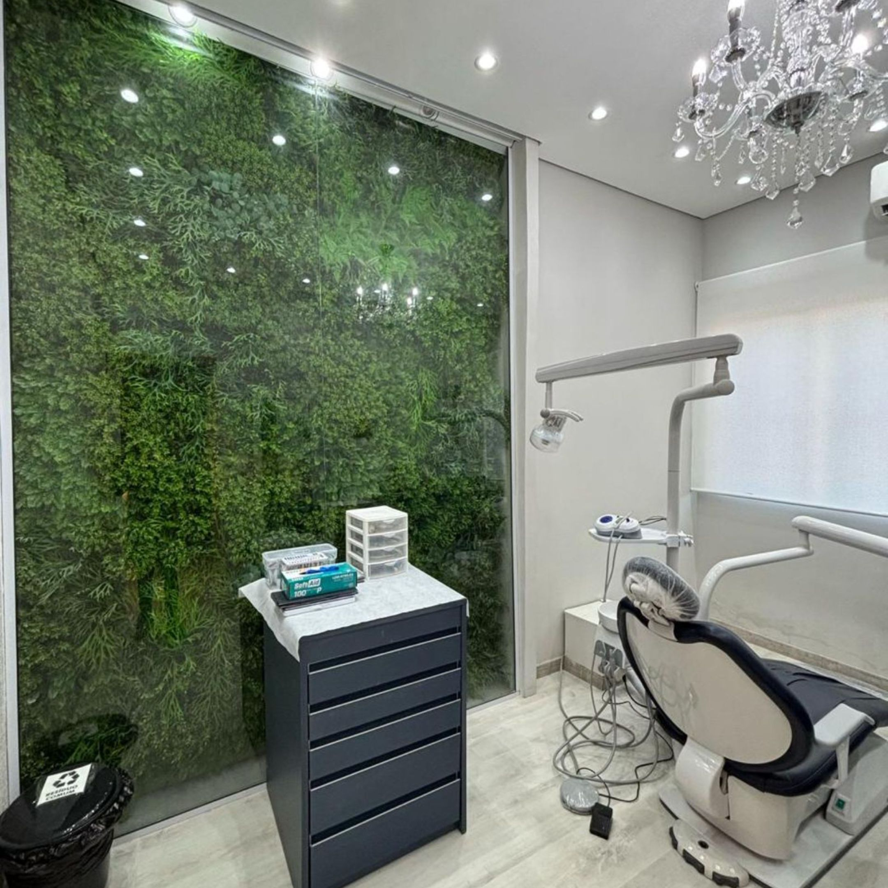
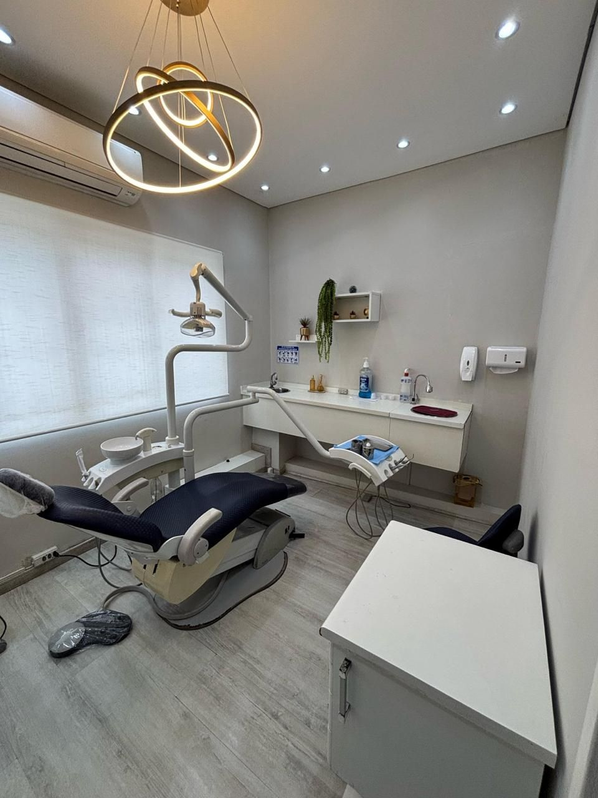
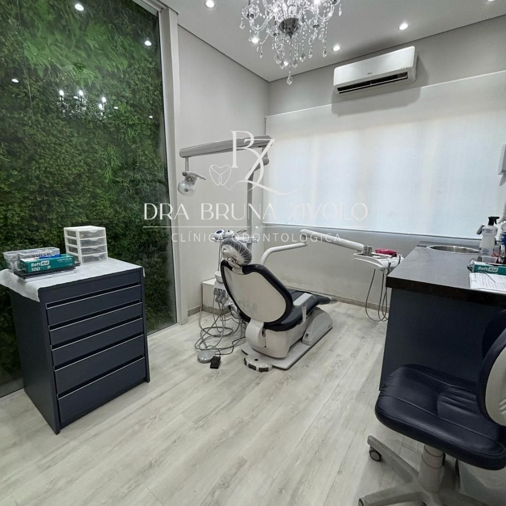
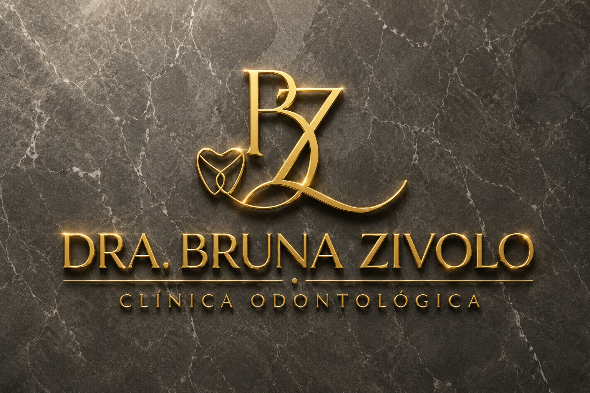

Atendimento humanizado
Acolhimento e atenção ao seu bem-estar integral.
Um espaço acolhedor na Cidade Dutra, pensado para a sua saúde bucal e o seu bem-estar.

CLÍNICA ODONTOLÓGICA BZ · CIDADE DUTRAFundada em 2017 pela Dra. Bruna Zivolo, a Clínica Odontológica BZ nasceu da paixão pela odontologia e do desejo de oferecer um atendimento acolhedor, humanizado e focado no bem-estar integral do paciente.
Estética dental avançada e saúde bucal se encontram em um ambiente que une tecnologia de ponta e atenção a cada pessoa. Nosso objetivo é cuidar do seu sorriso e ajudar a devolver sua autoestima.
Agendar avaliaçãoAcolhimento e atenção ao seu bem-estar integral.
Recursos como motor endodôntico e localizador para o tratamento de canal.
Profissionais com formação em diferentes áreas da odontologia e da cirurgia.
Atendemos em português e oferecemos suporte em outros idiomas.
We offer appointments and dental care in English.
英語、日本語、スペイン語での対応、治療が可能です



Estas marcas aparecem no site atual da clínica. Confirme a cobertura e as condições de atendimento ao agendar.
Consultar atendimento